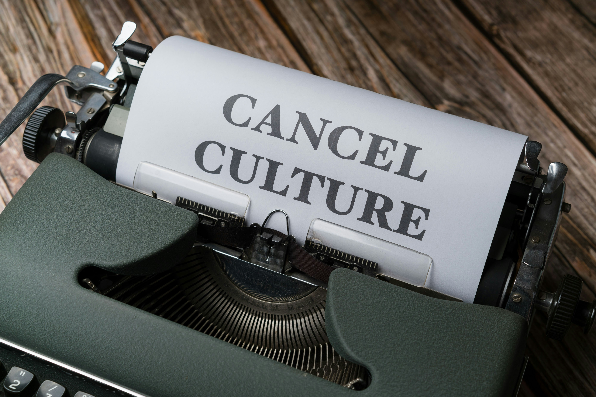
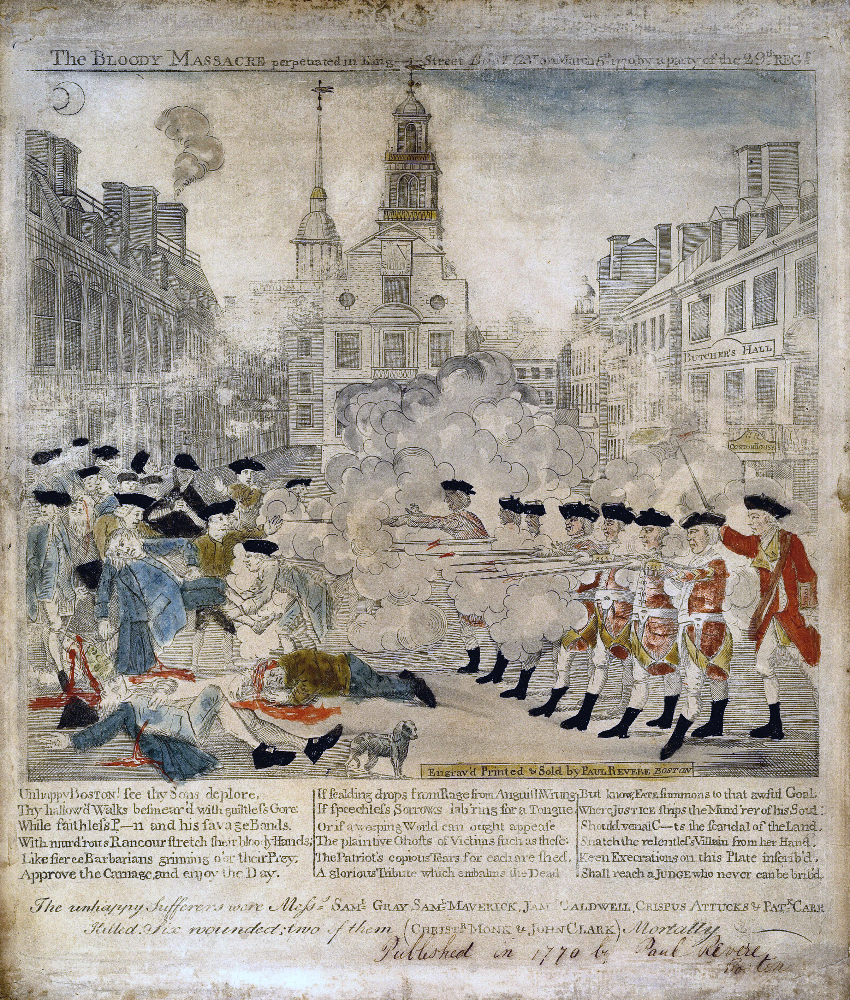
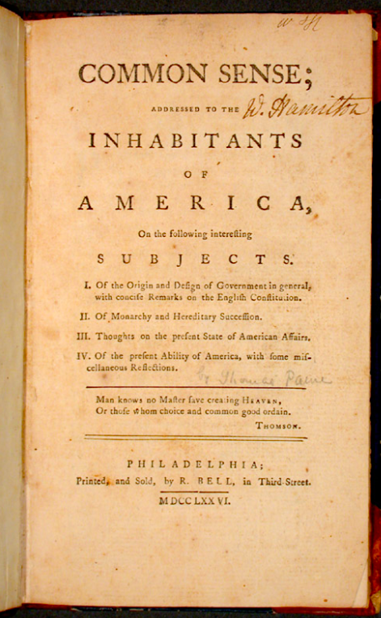
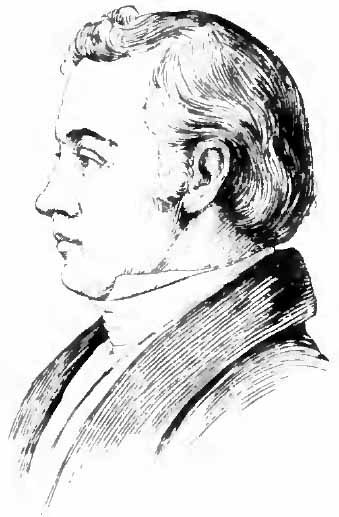
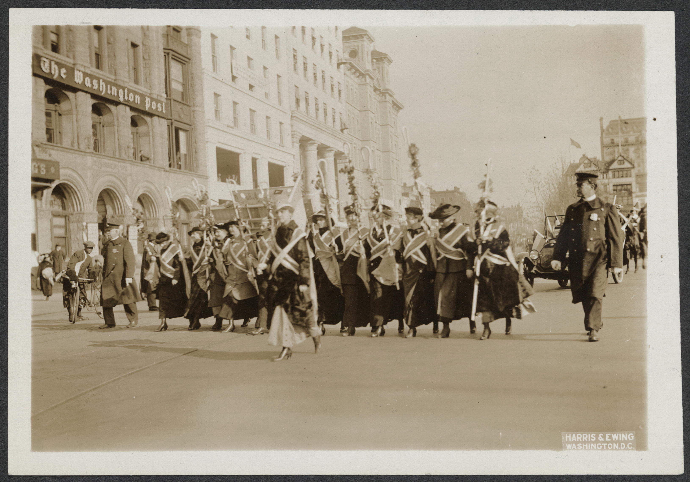
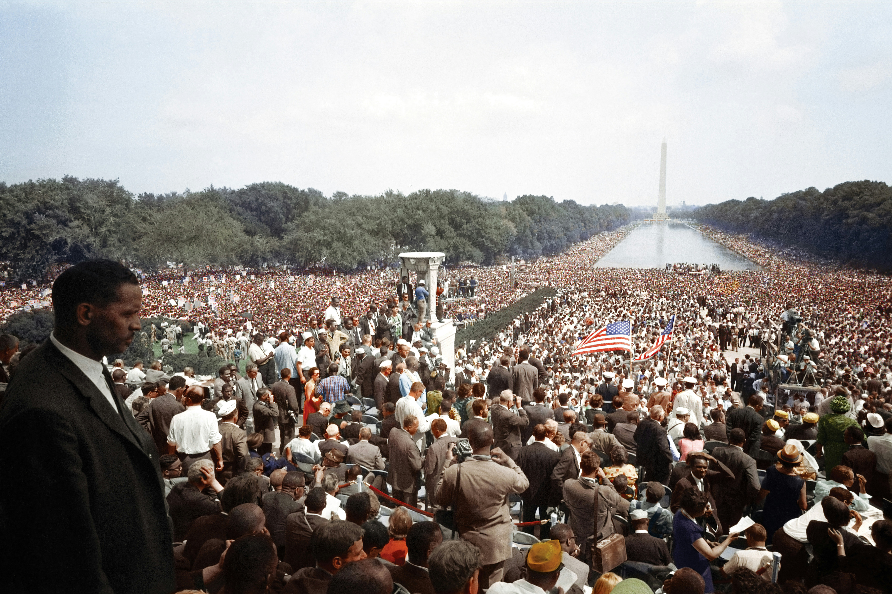
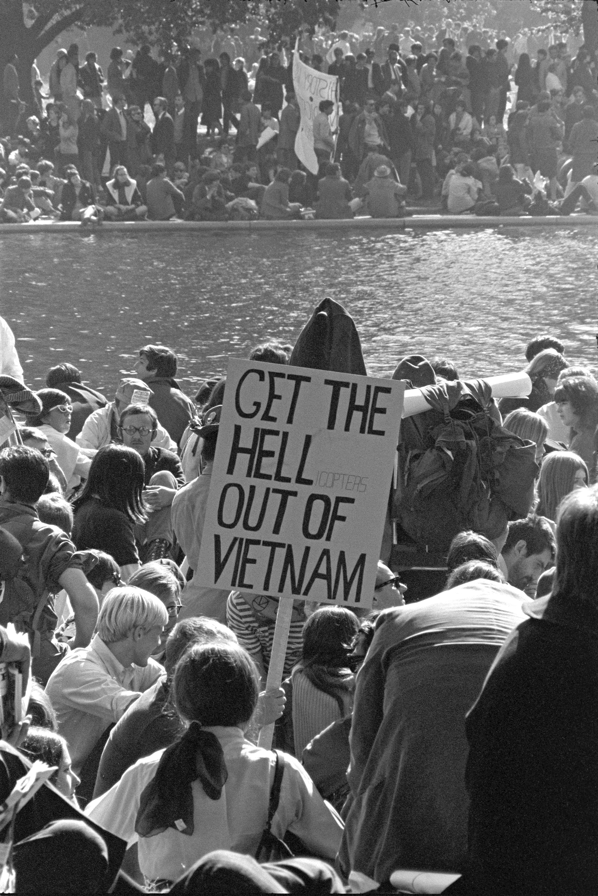
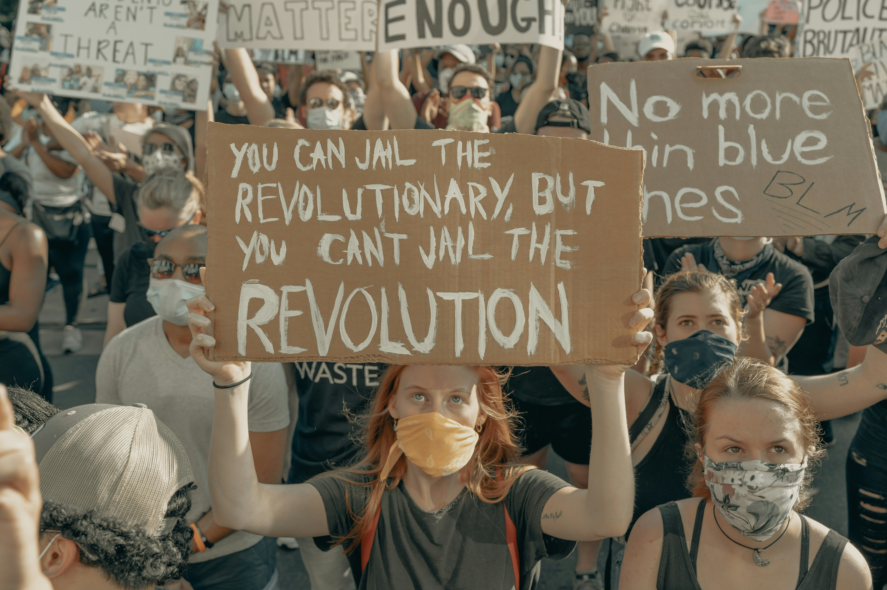

CANCEL CULTURE
Why You May Not Know It’s an American Tradition

We Need to Talk About Cancel Culture
Cancel culture has become one of those phrases that can start an argument before anyone has agreed on what the phrase actually means.
For some Americans, it describes accountability. Someone says or does something offensive, harmful, or unacceptable, and other people respond by criticizing that person, withdrawing their support, refusing to buy their products, demanding consequences, or asking an institution to reconsider its relationship with them. For others, cancel culture describes something much darker: public shaming, censorship, punishment, intimidation, or an organized effort to drive someone out of public life.
Americans genuinely disagree about the meaning of the term. In a 2020 survey of more than 10,000 U.S. adults, the Pew Research Center found that, among those who had heard at least a fair amount about “cancel culture,” 49 percent described it primarily in terms of holding people accountable. Smaller shares described it as censorship, mean-spirited attacks, or punishment for expressing certain views. Americans also differed sharply along partisan lines over whether calling someone out on social media was more likely to constitute accountability or undeserved punishment.
We are talking about something Americans have been doing for a very long time. The technology is new. The scale is new. The speed is new. The permanence is new. But the impulse is not. Americans have boycotted one another, publicly denounced one another, organized campaigns against businesses and institutions, damaged reputations, and pressured newspapers, publishers, universities, churches, employers, politicians, and governments. They have used propaganda to shape public opinion, demanded that their neighbors prove their loyalty, refused to purchase products associated with causes they opposed, and attempted to make certain ideas socially unacceptable. Sometimes they have even tried to use the power of government to accomplish what private citizens could not accomplish on their own.
Some of these efforts expanded freedom. Others restricted it. Some exposed genuine wrongdoing; others punished people for violating the political or social expectations of their communities. Some were peaceful, while others became violent. And throughout American history, Americans have sometimes praised collective pressure when it served their cause and condemned similar pressure when it was directed against them.
That is where this essay begins.
The question is not whether Americans have always disagreed. Of course we have. The question is what we do with that disagreement.
When does criticism become punishment? When does persuasion become intimidation? When does voluntary collective action become coercion? When does defending a principle become an excuse for abandoning it? And what happens when the people applying pressure believe so strongly in their cause that they stop examining the methods they are using?
There is another question that may be even more uncomfortable. Would we describe the behavior differently if the political identities were reversed?
That question will follow us through the history in this essay. We will encounter Americans who used pressure for causes we may admire, Americans who used similar methods for causes we may reject, and Americans who sometimes did both. The purpose is not to pretend that every movement was equally justified or that every historical conflict had two morally interchangeable sides. History does not support that conclusion.
The purpose is to ask whether our principles survive when the people using them are people we disagree with.
That is the Consistency Test, and it will be our guide throughout the essay.
Because if cancel culture is simply a new name for an old human impulse, then the history of that impulse matters. Before we decide that the people on our phones today are uniquely intolerant, uniquely cruel, or uniquely dangerous, we should ask whether Americans have always had the capacity to turn disagreement into pressure—and whether we have always been tempted to believe that our own cause makes that pressure different.
To understand the answer, we have to look backward—not to Twitter, not to Facebook, and not even to television, but to America itself.
Before We Blame Them, Look in the Mirror
There is a temptation, whenever we talk about cancel culture, to imagine that the people doing the canceling are always someone else. They are the angry people on the other side of the political spectrum. They are the people who want to silence opinions they dislike, who cannot tolerate disagreement, and who believe that anyone who says the wrong thing deserves to lose a job, a platform, a business, or a place in respectable society. Depending on your politics, you may already have a very specific picture of who “those people” are.
That is precisely why we need to be careful.
The history of political pressure in America does not belong to one party, one ideology, or one generation. The methods have appeared among reformers and reactionaries, religious movements and secular movements, labor organizations and business interests, civil rights activists and their opponents. The causes have changed, but the underlying human temptation has remained remarkably familiar: I believe this cause is important, therefore people who disagree with me deserve consequences.
Sometimes those consequences are entirely legitimate. Americans have the right to criticize one another, organize, protest, boycott, petition, persuade, withdraw their support, and decide where they spend their own money. Those activities are part of democratic life. The harder question begins when we stop examining what we are actually doing because we have convinced ourselves that the importance of our cause automatically justifies the methods we use to advance it.
That is where the mirror comes in.
Consider the word boycott. Most Americans probably have at least one boycott they regard as an important part of American history. The Montgomery Bus Boycott is remembered as a defining event in the Civil Rights Movement because organizers deliberately used economic pressure to challenge a system of racial segregation. Consumers withholding their money was not an accidental side effect of the protest; it was one of its principal tools. Few people today would argue that Rosa Parks and those who organized the boycott should simply have accepted the existing system because their protest might inconvenience businesses or other members of the community.
But now change the circumstances.
Suppose the people organizing a boycott hold political views you strongly oppose. Suppose they are boycotting a company because its owners, executives, employees, or customers support a cause you believe is legitimate. Suppose the boycott succeeds and the company suffers financially. Is the boycott still an exercise of political freedom?
The answer cannot depend solely on whether we like the cause.
That does not mean every boycott is automatically justified, nor does it mean every campaign against a person or institution is equivalent to the Montgomery Bus Boycott. It means we need a principle capable of surviving a change in political identity. If something is legitimate because people have the freedom to organize, persuade, protest, or withdraw their support, then that principle cannot disappear simply because we dislike the people exercising it.
The same problem appears when we talk about public criticism. If someone makes a statement you believe is racist, antisemitic, sexist, homophobic, authoritarian, extremist, or simply offensive, you are free to say so. Other people are free to agree with you, disagree with you, criticize the speaker, stop associating with that person, or decide that they no longer want to support their work. Those choices can all exist within a democratic society.
But criticism raises another question: What are we actually trying to accomplish?
Are we trying to persuade? To expose wrongdoing? To hold someone accountable? To make a political statement? To encourage people to withdraw voluntary support? Or are we trying to make the person unable to participate in public life at all?
Those are not necessarily the same thing. And that distinction is going to matter throughout this essay. Because history gives us examples of Americans using the same basic tools—criticism, protest, boycotts, public pressure, organization, persuasion, and political action—for radically different purposes and with radically different consequences. We should not assume that every example deserves the same judgment simply because the method looks similar. But neither should we assume that a method becomes legitimate merely because we approve of the cause behind it.
The real challenge is harder.
Would we defend the same behavior if the political identities were reversed?
If the answer changes, we need to understand why. That is the question we are going to carry with us into American history.
The Consistency Test
There is a reason to establish the Consistency Test before we begin moving through American history. Without it, this article could become nothing more than a catalog of historical grievances: here is something the Patriots did, here is something abolitionists did, here is something Civil Rights activists did, here is something conservatives did, here is something liberals did, and therefore everyone has always been hypocritical. That would be easy, but it would also miss the point. History is not particularly useful if we use it only to collect evidence against people we already disagree with.
The harder question is whether we can apply the same standard to ourselves that we demand of our opponents. Americans have a remarkable ability to describe the same behavior differently depending on who is doing it. When our side publicly condemns someone, we may call it accountability; when the other side does it, we may call it mob justice. When our side organizes a protest, we may call it grassroots activism; when the other side does it, we may call it intimidation. When our side boycotts a business, we may describe it as exercising consumer choice; when the other side does the same thing, we may describe it as an attempt to destroy someone's livelihood. Sometimes those distinctions are justified by real differences in conduct, intent, evidence, or consequences. The point is not that every dispute has two equally valid sides. The point is that our political identity cannot be the thing that determines which standard we apply.
That is where the Consistency Test comes in. When we encounter an example of public pressure, protest, cancellation, boycott, political retaliation, or government action, we should slow down before deciding whether it was justified. What actually happened? Who was exercising power, and what kind of power was being exercised? Was the action voluntary, or was there coercion involved? Was government power involved, or were private citizens and institutions acting on their own? Whose rights were being exercised, and whose rights were being threatened? What evidence supports the accusations being made? And perhaps most importantly: would we describe the behavior differently if the political identities were reversed?
The test is not designed to make every historical movement look equally good or every controversy look morally ambiguous. There are circumstances in which the evidence is overwhelming and the conduct is clearly distinguishable. There are also movements that confronted genuine injustice while using methods that deserve criticism, just as there are people who defended an unjust system while being right about some narrower question. Human beings rarely fit neatly into the categories we create for them after the fact. The purpose of the test is not to flatten those distinctions or to grade history on a curve. It is to prevent us from deciding what is acceptable solely because we like the people doing it.
That matters because the history we are about to examine contains plenty of behavior that is uncomfortable from a modern perspective. Americans have used persuasion, organization, boycotts, public criticism, economic pressure, propaganda, intimidation, legal authority, and government power to pursue political goals. Some of those efforts expanded freedom. Some defended existing power. Some did both at different moments. If we are going to examine them honestly, we cannot begin with the assumption that our preferred political tradition is inherently virtuous and its opponents are inherently abusive.
History also gives us a useful warning about hindsight. It is easy to condemn people who participated in a political movement centuries ago because we already know how the story ended. It is harder to imagine what the world looked like to them before the outcome was known. It is easy to condemn propaganda when we know the image was misleading; it is harder to ask what we would have believed if we thought the image represented an enemy threatening our community. It is easy to condemn intimidation when it is directed at people we admire; it is harder when the target is someone whose ideas we find dangerous or offensive. The purpose of looking backward is not to excuse those choices. It is to understand the impulses behind them well enough to recognize when those same impulses appear in our own time.
That is the uncomfortable part of this exercise. The people in history who made decisions we now regard as unjust were not necessarily thinking, “I am about to do something history will condemn.” Many believed they were defending their community, protecting their families, preserving their values, resisting tyranny, restoring order, or fighting injustice. Sometimes they were. Sometimes they were not. And sometimes they were doing something defensible while simultaneously crossing a line that should not have been crossed.
So as we move through the history of American political pressure, we will keep asking the same questions. When does persuasion become intimidation? When does criticism become punishment? When does voluntary collective action become coercion? When does a political disagreement become a question of loyalty? When does protecting one person's freedom begin to infringe upon another person's rights? And when does the desire to win an argument become a willingness to deny the other person a place in the political community?
Those questions did not begin with social media. They are much older than the technology we use to argue with one another today. To understand just how old they are, we have to go back to the beginning—not to Twitter, Facebook, or television, but to revolutionary Boston.
America's First “Cancel Culture”
If we want to understand how old this behavior really is, we should begin before the United States existed. The American Revolution was not simply a war fought between armies. Before Lexington and Concord, colonists were already using political pressure, economic pressure, public persuasion, and social pressure to force a choice: support the resistance, or continue doing business with the British Empire.
One of the clearest examples was the use of non-importation agreements. Patriots organized campaigns to discourage or prohibit the purchase of British goods, putting pressure on merchants and consumers alike. The decision about what to buy became a political decision. A person could participate in the resistance not by carrying a musket, but by refusing to purchase a particular product or by encouraging a neighbor to do the same. Political disagreement had entered the marketplace, turning ordinary consumption into an instrument of political pressure.
That pressure did not stop at individual purchasing decisions. Merchants who continued trading with Britain could become targets of public criticism, while newspapers, pamphlets, broadsides, and other forms of political communication helped identify the people and institutions regarded as supporters of the British position. Women played an important role as well, particularly through household purchasing decisions and domestic production. The Revolution therefore created something that should feel familiar: ordinary economic choices became expressions of political identity, and collective pressure became a way of making political disagreement visible.
There is nothing inherently undemocratic about that. People have always had the ability to decide what they will buy, where they will spend their money, what causes they will support, and which organizations they will join. A political movement that persuades people to voluntarily change their behavior is exercising one form of power. But the Revolutionary period also demonstrates how quickly voluntary pressure can exist alongside something much harsher.
The Revolution was also a civil conflict within American society. Not every colonist wanted independence, and historians commonly estimate that a substantial minority remained loyal to the Crown. Loyalists were not simply passive observers. Some provided intelligence, resisted Patriot authority, supported British forces, or otherwise worked against the revolutionary movement. Patriots responded in different ways depending upon the circumstances, and those responses could range from political opposition and public pressure to imprisonment, intimidation, property confiscation, and exile.
That distinction is important because disagreement and active opposition are not necessarily the same thing. A person who simply disagreed with independence presented a different problem from someone actively assisting an enemy army. Revolutionary communities nevertheless had to wrestle with a question that democracies continue to face: What do you do with people living inside your political community who fundamentally reject what you believe that community should become—and what happens when those people move from disagreement into active opposition?
There was no single answer. Americans used persuasion. They organized. They boycotted. They published arguments. They pressured their neighbors. They ostracized people they considered enemies. And in some circumstances, they used legal authority and physical force. The same society that was demanding liberty from an empire was also struggling to determine how much freedom it could tolerate among people who opposed the revolution itself.
That tension is one of the reasons the Revolution is such a useful place to begin this investigation. The Patriots were engaged in a struggle that many considered a defense of political liberty, and some of the tactics they employed became important instruments of that struggle. But a cause can be important without making every tactic used in its name legitimate. The fact that a movement believes it is fighting for freedom does not automatically answer the question of how it should treat people who disagree with it.
And that brings us back to the Consistency Test. If we admire the Revolution, we have to be willing to examine the methods used by revolutionaries as well as the ideals they proclaimed. If we believe collective pressure can be a legitimate form of political participation, we have to be willing to defend that principle when the people applying the pressure hold views we dislike. If we believe political disagreement should be tolerated, we have to confront the circumstances in which Americans decided that disagreement had become something more dangerous: disloyalty.
The technology was primitive by our standards. There was no television, no radio, no internet, and certainly no social-media algorithm capable of delivering outrage to millions of people in seconds. But the basic machinery was already there: organize people, identify a target, persuade others to act, attach political meaning to economic choices, isolate opponents, and—when the stakes became high enough—use institutional or physical power against them.
The machinery was old. America was just getting started.
Propaganda Is Older Than Twitter
If political pressure was already familiar in revolutionary America, so was something else that should feel remarkably modern: propaganda. Americans did not need television, radio, or social media to turn political events into powerful stories. They needed an image, a printing press, and an audience willing to believe that the story being told represented the truth.
Consider Paul Revere's famous engraving of the Boston Massacre. The image became one of the most influential representations of the event in the revolutionary era, but it was not a neutral reconstruction of what happened. It presented the British soldiers in a way that emphasized the Patriots' interpretation of the confrontation and helped create a powerful political narrative about British oppression. The important point is not simply that the image was inaccurate in particular details. The image itself became evidence of something else: the political argument Americans were being encouraged to accept.

That distinction is worth remembering. A piece of propaganda can be historically inaccurate as a depiction of an event while being historically valuable as evidence of what someone wanted the public to believe about that event. The image tells us something about the politics surrounding the Boston Massacre even when it does not give us a perfectly reliable picture of the massacre itself.
The technology has changed enormously since then, but the basic process has not. Today the medium might be a cropped photograph, an edited video, a headline stripped of context, a selectively quoted statement, or an image designed to provoke an immediate emotional reaction. The internet makes those things faster to create, easier to distribute, and vastly more difficult to contain once they begin circulating. But it did not invent the basic human instinct to take a complicated political event and turn it into a simple story about heroes, villains, victims, and enemies.
Thomas Paine's Common Sense offers another side of the same phenomenon. Paine was not pretending to produce a detached academic analysis of the relationship between Britain and the colonies. He was making an argument designed to persuade ordinary people that independence was both necessary and achievable. His pamphlet became enormously influential because it translated a complicated political dispute into language that a broad audience could understand and act upon.

There is nothing inherently wrong with that. Political persuasion is part of democracy. Movements need arguments. Reformers need to convince people who do not already agree with them. Political campaigns, newspapers, pamphlets, speeches, advertisements, demonstrations, and social media all serve that basic function. The problem begins when persuasion becomes so detached from evidence that the story matters more than the truth.
That problem is not unique to one political movement or one period of American history. People who believe deeply in a cause have an incentive to present events in ways that strengthen their argument. Complicated circumstances become simple narratives. Opponents become villains. Supporters become heroes. Information that helps the movement is repeated, while information that complicates the story can be ignored, minimized, or dismissed. Sometimes this happens deliberately. Sometimes people simply repeat what they already believe because it fits the story they have accepted.
And once a political community begins dividing itself into heroes and villains, information can become another form of political pressure. If an opponent can be portrayed not merely as someone who is wrong but as someone who is dangerous, corrupt, disloyal, or morally illegitimate, then opposing that person begins to feel less like a disagreement and more like a duty. At that point, the goal can shift from persuading the target to defeating the target.
That is where propaganda begins to connect with the larger subject of this article. Public pressure works more effectively when people know whom they are supposed to pressure. Economic boycotts become more powerful when a community knows which merchants are supporting the opposing side. Political movements become more effective when they can define who belongs to the cause and who stands against it. Information does not merely describe political conflict. It can help organize the conflict itself.
And once again, the Consistency Test follows us into the past. We can look at revolutionary propaganda and recognize how easily political movements simplify reality when they are trying to mobilize people. But before we congratulate ourselves for being more sophisticated, we should ask a less comfortable question: What stories are we willing to believe—or repeat—because they support our side?
The answer matters because propaganda did not disappear when the Revolution ended. It became part of American political life. And as the country expanded, the arguments became more difficult, the stakes became higher, and the people making them increasingly faced a question that revolutionary America had not solved: What happens when the people demanding change are themselves treated as the problem? That is where the abolitionists enter the story.
When the Abolitionists Started Getting Cancelled
By the nineteenth century, the political arguments were becoming harder to contain. The question was no longer simply whether Americans should resist British authority or whether a merchant should sell British goods. Increasingly, Americans were arguing about the institution of slavery itself, and the people making that argument were challenging one of the most deeply entrenched systems in the country.
The abolitionists used many of the same tools that earlier political movements had used. They published newspapers and pamphlets. They organized petitions. They held lectures and meetings. They distributed literature through the mail. They appealed to voters, churches, legislators, and ordinary citizens. They were trying to change public opinion, and they understood that changing public opinion was one of the ways political change could eventually become possible.
But abolitionist speech provoked a reaction that went well beyond disagreement. Southern communities and their allies increasingly viewed abolitionist organizing as a threat to the existing social and political order. Abolitionist materials were suppressed or destroyed, abolitionist speakers were confronted, and political efforts were made to prevent antislavery petitions from receiving normal consideration in Congress. The conflict therefore became a struggle not only over slavery, but over whether Americans should be permitted to organize and speak against it.
That distinction matters. Someone can believe an argument is dangerous without believing that the person making it should be prevented from making it. Those are different positions. The first is disagreement; the second begins to raise a question about who gets to participate in public debate.
Congress eventually confronted that question directly through the so-called gag rule. Antislavery petitions were routinely tabled or prevented from being considered, meaning that the issue was being addressed not by debating the arguments but by restricting the process through which those arguments could reach Congress. The controversy demonstrated how political institutions can become part of a struggle over speech itself.
Abolitionists also faced pressure outside government. Elijah Lovejoy, an abolitionist newspaper editor in Illinois, was killed in 1837 while defending his press from a mob. His death became a national symbol of the dangers faced by people who challenged slavery publicly. The episode illustrated something that would recur throughout American history: political movements do not operate only through formal institutions. Public opinion, organized groups, economic pressure, intimidation, and violence can all shape what people believe they are permitted to say or do.

The abolitionist movement also developed another strategy that should sound familiar today: changing consumer behavior for political reasons. The Free Produce movement encouraged consumers to avoid goods produced by enslaved labor. The idea was straightforward. If people believed slavery was morally wrong, they could try to avoid financially supporting it. Consumption became another arena in which political principles could be expressed.
Again, the important point is not that every tactic employed by abolitionists was identical to a modern boycott or social-media campaign. It is that Americans were already learning how to use collective pressure to turn individual choices into political statements. What you bought, what you read, where you spent your money, which organizations you supported, and whose arguments you were willing to hear could all become part of a larger political struggle.
And the abolitionists encountered the other side of that equation as well. If one group could organize to change public opinion, another group could organize to stop them. If one side could use newspapers and petitions to spread its message, opponents could attempt to suppress those newspapers and petitions. The same mechanisms that gave ordinary citizens political power could be used by people who wanted to preserve the status quo.
That is one of the uncomfortable truths about political pressure: the tool itself does not tell us whether the cause is just. A boycott can be used by people challenging injustice, and it can be used by people defending an existing system. Public criticism can expose wrongdoing, but it can also be used to silence an unpopular speaker. Collective action can give powerless people influence, but collective action can also become threatening when a group decides that someone else should not be allowed to participate.
The abolitionist struggle therefore brings the Consistency Test into sharper focus. If we believe people should be free to organize, petition, publish, persuade, boycott, and protest for causes they believe in, that principle has to apply even when the cause makes other people uncomfortable. If we believe dangerous ideas should be answered with better arguments rather than suppression, we have to be willing to defend that principle when the speaker is someone whose ideas we find deeply offensive.
The harder question is what happens when a political community decides that disagreement itself is evidence of disloyalty. That question would become unavoidable as the slavery debate moved from moral argument into national political conflict. Eventually, Americans would not merely ask whether their neighbors agreed with them. They would ask whether those neighbors were loyal to the country at all. The country was moving toward a place where political disagreement could become a question of loyalty.
When Political Disagreement Becomes a Question of Loyalty
“The slavery debate had already demonstrated how quickly political disagreement could become a question of identity. But the Civil War transformed that problem. Once Americans were fighting one another, the question was no longer simply whether your neighbor agreed with your political position. It became a question of whether your neighbor’s disagreement itself might be helping the enemy.”
That distinction changed the stakes of political speech. In wartime, governments have legitimate reasons to be concerned about espionage, military intelligence, sabotage, and assistance to an opposing force. At the same time, war does not automatically make every political dissenter an enemy. The difficult question is where the line should be drawn between legitimate opposition and conduct that threatens the government's ability to prosecute the war.
The Civil War produced Americans who opposed the war, opposed Lincoln's policies, criticized emancipation, or argued that the conflict should end through negotiation. Some of these opponents became known as Copperheads. Their opponents frequently portrayed them not simply as people with whom they disagreed, but as disloyal Americans whose political activity could undermine the Union war effort.
hat distinction between disagreement and disloyalty became especially consequential when the government began taking extraordinary measures. Newspapers were suppressed in some circumstances, individuals were arrested, and loyalty became an increasingly important political and social category. The suspension of habeas corpus under the Lincoln administration produced one of the most consequential constitutional controversies of the war because it raised a fundamental question: how far can government go to protect the country when the ordinary legal process itself is viewed as a potential obstacle to military necessity?
The case of Clement Vallandigham illustrates the problem particularly well. Vallandigham was a prominent Democratic critic of the Lincoln administration and the war. In 1863, he was arrested by military authorities after a speech in which he sharply criticized the administration's conduct of the war. His case eventually reached the Supreme Court indirectly through Ex parte Vallandigham, although the Court did not resolve the underlying constitutional questions because of the procedural posture of the case.
The episode remains important not because it gives us an easy answer, but because it exposes the pressure that war places on a democratic society. The government believed it had responsibilities to preserve the Union and prosecute the war. Its critics believed those responsibilities did not erase the right to political dissent. Both claims could be made in the language of defending the country.
The same tension appeared in the treatment of newspapers and political organizations. Information could affect morale, recruitment, military secrecy, and public support for the war. A government fighting for its survival had reasons to worry about information reaching the enemy. But democracy cannot survive if an imperiled government is allowed to treat its own survival as justification for suppressing legitimate criticism. The more power government exercises over political information, however, the greater the danger that legitimate criticism can be treated as a threat simply because it is inconvenient.
This balancing act is a core issue at the very heart of democracy itself: the need to protect the rights of the people against the need to preserve the institutions responsible for protecting those rights.
This is where the Consistency Test becomes particularly uncomfortable. It is easy to defend dissent when our own side is dissenting. It becomes harder when we believe the country is facing an existential threat and the person speaking against our position appears to be making that threat worse. The question is not whether governments have any legitimate power during wartime; they clearly do. The question is whether we are willing to examine that power by the same standard when the government is controlled by people we oppose.
The Civil War therefore adds another layer to the story we are tracing. Political pressure had already existed in American life. Americans had boycotted one another, organized against one another, published propaganda, suppressed opposing arguments, and attempted to force political choices. Now the stakes had become so high that political disagreement could be interpreted through the language of loyalty and national survival.
And once disagreement becomes a question of loyalty, compromise becomes much harder. If your opponent is merely wrong, you can argue with him. If your opponent is dangerous, you may try to stop him. If your opponent is disloyal, you may begin to believe that allowing him political space is itself a threat to the community.
That is a dangerous progression, but history does not allow us to dismiss it simply because we know where the Civil War ended. The people living through the conflict did not know the outcome. They were making decisions in the middle of a national emergency, surrounded by death, political uncertainty, and the possibility that the United States itself might cease to exist.
The Civil War did not resolve the tension between liberty and political loyalty. It exposed just how difficult that tension becomes when Americans believe the survival of the nation is at stake.
And even after the shooting stopped, the argument did not disappear. The country had won the war, but it still had to answer a different question: What happens when political power changes hands, but the conflict over what America should be does not end? That takes us into Reconstruction.
Reconstruction: Winning the War Didn't End the Fight
The Civil War ended with the Confederacy defeated, slavery abolished, and the Union preserved. But winning the war did not settle the question of what the country would become afterward. The end of military conflict created another struggle, this time over citizenship, political power, racial equality, and the future of the former Confederate states.
Reconstruction was therefore not simply a period of rebuilding. It was a contest over competing visions of American democracy. The federal government attempted to establish new constitutional and political arrangements in the South, while formerly enslaved people sought to exercise rights that emancipation had made possible. Black men voted, held public office, organized communities, built institutions, and participated in political life on a scale that represented a profound change from the antebellum order.
Those changes produced determined resistance. Groups and individuals opposed to Reconstruction used political organization, economic pressure, intimidation, and violence to challenge the new political order. The goal was not simply to defeat particular candidates or policies. In many cases, the larger objective was to prevent Black Americans and their allies from exercising the political rights that Reconstruction had sought to establish.
This is an important distinction when we talk about political pressure. A boycott, protest, or campaign against a political opponent can be a form of participation in public life. But political pressure can also be used to prevent other people from participating in public life at all. The difference cannot be determined simply by asking which side applied the pressure. We have to ask what the pressure was intended to accomplish, what methods were used, and whose rights were affected.
The struggle also extended into everyday economic life. Black communities organized to support one another and to use their economic power collectively. Political disagreements could therefore become economic disagreements, just as they had during the Revolution. Where people spent their money, whom they did business with, which institutions they supported, and whether they were willing to cooperate with particular businesses or political organizations could all become part of a larger contest over power.
One example was the use of streetcar boycotts and other forms of organized economic resistance. These campaigns demonstrated something that would become increasingly important in American political life: people who lacked formal control over an institution could sometimes exercise influence by collectively withdrawing their participation from it. Economic power could become political power.
But Reconstruction also demonstrates the darker side of collective pressure. When people are trying to change a political system, those who benefit from the existing system may have powerful incentives to resist them. If resistance moves from persuasion and political competition into intimidation or violence, the question is no longer simply whether someone is trying to influence public opinion. The question becomes whether other citizens can safely exercise their own rights.
That is particularly important because political rights are not meaningful if people are prevented from exercising them through fear. The formal existence of a right does not guarantee the practical ability to use it. A person may technically possess the right to vote, organize, speak, or participate in politics while facing consequences designed to make exercising that right dangerous.
Reconstruction therefore gives us another variation on the problem we have been following since revolutionary America. Political movements use collective power to change society. Their opponents use collective power to resist them. Institutions become involved. Economic pressure enters the struggle. And eventually the question becomes whether the pressure is being used to persuade people or to prevent them from exercising their own rights.
The lesson is not that political pressure itself is inherently dangerous. Democratic movements need pressure. Without organized citizens demanding change, many of the rights Americans now take for granted would never have been expanded. The lesson is that the same basic mechanism—people acting together to influence other people—can produce very different consequences depending on what is being demanded and how that demand is enforced.
Reconstruction also reminds us that political conflict does not necessarily end when one side wins an election, passes a law, or defeats an opposing army. The people who lose one political battle remain part of the society. They can organize, resist, adapt, and attempt to regain power. Likewise, the people who win political power may discover that changing the law is much easier than changing the society governed by it.
That would become a recurring pattern in American history. The abolition of slavery did not end the struggle over racial equality. Reconstruction did not end the struggle over Black political participation. And political rights on paper did not automatically produce equal political power in practice. The next generation of Americans would confront another question about who should have a voice in the political community. This time, the people demanding that voice would be women.
Women Demand a Voice
For much of American history, women were expected to participate in public life without having an equal voice in determining the laws under which they lived. They could organize families, communities, churches, reform movements, businesses, and charitable organizations, but political power remained overwhelmingly in the hands of men. The suffrage movement challenged that arrangement by demanding something that now seems obvious but was anything but obvious at the time: women should have a voice in choosing the people who governed them.
The movement did not rely on a single tactic. Suffragists petitioned government, organized meetings, gave speeches, published arguments, marched, lobbied legislators, and built organizations dedicated to changing public opinion. They understood that winning the vote required more than convincing a handful of politicians. They had to persuade millions of people that the political system itself needed to change.
That meant entering the public argument in increasingly visible ways. Suffragists deliberately attracted attention because attention was part of the political strategy. If newspapers would not cover them, they found other ways to reach the public. If politicians ignored their petitions, they organized more petitions. If opponents argued that women were not interested in politics, suffragists demonstrated the opposite by making their political demands impossible to ignore.
This was pressure, but it was pressure aimed at expanding political participation. The people applying it were asking to become participants in a system from which they had been excluded. That distinction matters because political pressure is not inherently an attempt to silence someone else; sometimes pressure is how people who lack institutional power force an institution to listen.
The movement also encountered organized opposition. Some Americans believed women should not vote and argued that expanding suffrage would damage the existing political and social order. Others opposed particular suffrage organizations, tactics, or arguments. Newspapers could support or oppose the movement. Political organizations could attempt to influence public opinion. The suffrage struggle therefore became another contest in which Americans used the tools of persuasion, organization, publicity, and political pressure to determine what kind of country they wanted.
Some suffragists also used tactics that deliberately disrupted ordinary expectations. Public demonstrations, marches, protests, and other forms of highly visible activism could make people uncomfortable precisely because they forced a political question into spaces where many preferred not to confront it. That discomfort was not necessarily evidence that the protest was illegitimate. Creating discomfort can be part of political activism, particularly when a movement is trying to make an ignored issue impossible to ignore. A movement demanding change rarely succeeds by making everyone who benefits from the existing system comfortable.

But the Consistency Test requires us to ask what happens when the tactic is used against a cause we support. We tend to celebrate disruptive activism when we agree with the objective and complain about it when we do not. We praise persistence as courage when the cause seems just and describe the same persistence as harassment when the cause seems wrong. The suffrage movement reminds us that the legitimacy of political pressure cannot be determined solely by whether the people applying it have chosen a cause we happen to support.
There is another lesson here as well. Political movements often discover that changing public opinion and changing institutions are two different battles. A society can become increasingly sympathetic to an idea while its political institutions remain resistant to it. Conversely, a legal change can occur without immediately changing the attitudes of everyone affected by it. The struggle does not necessarily end when the law changes.
The suffrage movement therefore adds another piece to the pattern we have been tracing. Americans who lacked formal political power developed other forms of power. They organized, persuaded, publicized, protested, petitioned, and pressured institutions. They tried to make an issue impossible to ignore. Their opponents organized and pressured in return.
And once again, the important question is not whether pressure existed. It is what the pressure was trying to accomplish and what methods were used to accomplish it. A movement seeking to expand participation is doing something fundamentally different from a movement seeking to prevent another group from exercising its rights, even if both movements hold demonstrations, publish propaganda, organize boycotts, or pressure politicians.
The suffrage struggle also brings us closer to a recurring feature of American political life: the boycott. When people cannot control an institution directly, they may discover that they can influence it by controlling what they purchase, where they spend their money, and which businesses they are willing to support. The marketplace was about to become another battlefield in the American argument over power.
Don’t Buy It
One of the most powerful ways ordinary people can participate in politics is also one of the simplest: they can refuse to spend their money. We make purchasing decisions every day for practical reasons—price, quality, convenience, habit—but those decisions can also become political when enough people make them together. The boycott turns a private economic decision into a form of collective pressure, allowing ordinary consumers to participate in a political conflict without holding political office.
That idea did not begin with Montgomery, Bud Light, or social media. It was already present during the American Revolution, when colonists organized non-importation agreements and encouraged one another to stop purchasing British goods. It would appear repeatedly throughout American history as Americans confronted questions of slavery, labor, civil rights, temperance, and corporate power. The basic mechanism remained remarkably consistent: one person's decision might have little effect, but thousands of people making the same decision could get the attention of a business, an industry, or even a government.
That is what makes the boycott so interesting: it is a form of power that does not necessarily require political office, wealth, or physical force. A person can participate simply by choosing where to spend—or not spend—his or her own money, and that choice can become politically meaningful when shared by enough people.
The abolitionist movement understood this principle. Supporters of the Free Produce movement encouraged consumers to avoid goods produced by enslaved labor, arguing that people could refuse to participate economically in a system they considered immoral. The movement attempted to connect everyday purchasing decisions with moral responsibility: if slavery depended in part on an economic system that generated wealth through enslaved labor, consumers could at least try to ensure that their own purchases did not contribute to it.
The strategy had obvious limitations. Individual consumers could not simply purchase their way out of slavery, and the economic effect of Free Produce activism was limited by the difficulty of determining how particular goods had been produced and by the realities of nineteenth-century commerce. But the underlying idea was significant because it established a principle that would become familiar in later American politics: your money can be an expression of your values.
The idea was not that every consumer possessed enough individual economic power to change society. The idea was that individual choices could become meaningful when organized collectively. That distinction lies at the heart of almost every modern consumer boycott. A person does not need to prove that a company will collapse before deciding not to buy its product. The decision itself can be an expression of values. The consumer is effectively saying, “I don't want my money supporting this,” while also attempting to persuade others to make the same choice. When enough people participate, the private decision becomes a public political statement.
There is nothing inherently undemocratic about that. In fact, boycotts can be an important form of democratic participation, particularly for people who have limited access to other forms of political power. They allow citizens to organize around a cause and attempt to influence institutions without necessarily controlling the government.
But the boycott also introduces a question that becomes increasingly important as we move toward the present: when does economic pressure become something more than economic pressure? Suppose ten people decide not to purchase a product. Then suppose ten thousand people make the same decision. Now imagine that an organized campaign begins identifying individual employees, customers, executives, or retailers and pressuring them personally to participate. The underlying political cause may not have changed, but the methods have, and those methods can produce very different consequences.
There is no single numerical point at which a boycott becomes illegitimate. Context matters, as do the tactics being used. A peaceful appeal to consumers is fundamentally different from threatening someone with violence. Encouraging people to make their own purchasing decisions is different from coercing them into doing so. Publicly criticizing a company is different from making knowingly false accusations about an individual employee.
The word “boycott” can therefore describe very different activities. That distinction matters because Americans have used boycotts for causes across the political spectrum. The labor movement used them to pressure employers and businesses. The Civil Rights Movement used them to challenge racial discrimination. Temperance activists used economic pressure against businesses associated with alcohol. In more recent decades, conservatives and liberals alike have organized consumer campaigns against companies whose policies, advertisements, employees, executives, or public statements they opposed.
The politics change. The mechanism does not. That creates an uncomfortable version of the Consistency Test. If you believe a boycott is a legitimate exercise of political freedom when you agree with the cause, what happens when the cause is one you oppose? If you believe consumers should be free to stop supporting a company because of its politics, should that freedom also belong to consumers whose politics you dislike? And if you defend a company's right to respond to a boycott by changing its policies, should you defend that right when the company's response disappoints you?
These questions become particularly important because boycotts can produce consequences without involving the government at all. A private citizen can decide not to buy something; a group can encourage millions of other people to do the same; a business can lose revenue; investors can react; employees can become concerned; and executives can change course. None of those events necessarily involves government censorship, even though the result may be significant.
That does not mean every outcome is harmless or every tactic is fair. It means we have to identify the type of power involved before deciding what rules or principles should apply.
This is one of the recurring problems with the modern debate over cancel culture. The phrase can make very different things sound like one phenomenon when they are not. A customer refusing to buy a product is one thing. A coordinated campaign demanding that an employer fire an individual is another. An employer deciding to fire that individual is another. A government official threatening the employer over the person's political expression is something else again.
The outcome might look similar from a distance: someone loses a job, a company changes its behavior, or a public figure loses a platform. But the source of the pressure matters. Who acted? What authority did that person or organization possess? What choices did the person on the receiving end actually have? Was the pressure voluntary, organized, coercive, or governmental?
Those distinctions will become central later in this essay.
When the Boycott Becomes a Weapon
The boycott gives consumers political power by allowing them to withhold their money. The strike gives workers something equally significant: the ability to withhold their labor. An individual employee who refuses to work may simply lose a day's wages or, depending on the circumstances, a job. When workers act collectively, however, their absence can interrupt production, shut down operations, and force an employer to negotiate. Like the boycott, the strike turns an individual decision into collective power. The thing being withheld is no longer money. It is labor.
American workers discovered the political potential of collective action as industrialization brought large numbers of people together in factories, mines, railroads, farms, and other workplaces. Workers often possessed far less economic power individually than the companies that employed them. Acting together gave them leverage that they could not exercise alone. Strikes, boycotts, picketing, and other forms of collective action became tools for pursuing higher wages, better working conditions, shorter hours, union recognition, and greater bargaining power.
There is an important democratic principle here. People do not surrender their ability to organize simply because they are employees. Workers can decide that they will act collectively rather than individually, and collective action can give people who have relatively little power on their own a meaningful voice. The labor movement helped establish the broader idea that ordinary people could create political and economic leverage by acting together.
But the strike also reveals something the boycott makes easier to overlook: collective power affects other people. A worker may see a picket line as an expression of solidarity, while a person who wants to cross that line may experience it very differently. An employer may view a strike as economic coercion designed to force a concession, while workers may view the employer's refusal to negotiate as an exercise of economic power designed to force them back to work. Neither description, by itself, tells us whether the conduct was lawful, justified, coercive, or abusive. The important question is how that power is being exercised and what happens to the people on the other side of it.
The historical record becomes particularly complicated when labor disputes turn violent. The Homestead Strike of 1892, the Pullman Strike of 1894, and the Ludlow conflict of 1914 are among the better-known examples of labor disputes in which disagreements over wages, working conditions, union recognition, corporate authority, and economic power eventually involved violence and government intervention. These episodes demonstrate why the word “power” matters. A worker possesses control over his or her labor. A union can possess enormous collective power. A corporation possesses capital, property, employment, and production capacity. Government possesses coercive authority that none of those private actors possesses in quite the same way.
Once government enters the conflict, the nature of the argument changes. The government has legitimate responsibilities to maintain public safety and enforce the law, but its intervention can also alter the balance between workers and employers. A government decision to protect striking workers, restrain a strike, protect replacement workers, enforce a court order, or intervene after violence can have consequences far beyond the immediate dispute. The question is no longer simply which private party has more economic power. It becomes a question of how public authority should respond when competing private interests collide.
That is why the labor movement belongs in an essay about cancel culture. The underlying behavior is not identical, and we should not pretend that a nineteenth-century strike and a twenty-first-century social-media campaign are the same phenomenon. But the structure is familiar. Americans repeatedly discover that collective action gives ordinary people power they would not possess individually, and then they have to decide how that power should be used and what limits should apply to it.
The labor movement also complicates the idea that pressure itself is somehow incompatible with freedom. Pressure is part of politics. Legislators are pressured by constituents. Businesses are pressured by customers. Employers are pressured by workers. Universities are pressured by students and donors. Political parties are pressured by activists. Governments are pressured by protesters. A democracy without pressure would not necessarily be a more peaceful democracy; it might simply be a democracy in which people who already possess institutional power have fewer reasons to respond to people who do not.
The real question, then, is not whether pressure should exist, but what kind of pressure we are willing to accept. A movement that persuades people to join a strike is different from one that threatens people who refuse. A picket line intended to communicate a political or economic message is different from violence used to prevent someone from entering a workplace. An employer refusing a demand is different from an employer using unlawful retaliation. And government intervention is different from either side exercising private economic power. The labels do not settle those questions. The conduct does.
This is where the Consistency Test becomes useful again. If we defend the right of workers to organize when we agree with their demands, we should understand that the people on the other side of the dispute also possess rights. If we defend consumers who organize against corporations, we should recognize that corporations have their own lawful choices about how to respond. And if we believe government should intervene to protect one side's rights, we should be able to explain the principle that determines when government should intervene and when it should stay out.
The history of labor therefore moves us closer to the central problem of this essay. Americans have developed an enormous toolbox for applying pressure to one another: we can persuade, organize, protest, boycott, strike, withdraw our money, withdraw our labor, and withdraw our support. The question is what happens when we decide that withdrawal is not enough—when the goal is no longer to convince someone to change, but to make sure that person cannot continue doing what they are doing. That is where collective pressure can become a weapon.
And Americans would soon discover another way to turn pressure into something even more powerful: the ability to use government itself to enforce a moral judgment.
When We Decided Government Should Enforce Our Morals
From persuasion to prohibition
There is a point where social pressure stops being social pressure.
A person can refuse to buy a product. A church can refuse to associate with someone. A political organization can organize a protest. A newspaper can condemn an opponent. Neighbors can decide they do not want someone in their social circle. Employers, within the limits of the law, can make decisions about whom they hire. These are all forms of private or collective power, and Americans have been using them for centuries.
Government is different. When the government enters the picture, the question is no longer simply whether one group can persuade, pressure, shame, boycott, or ostracize another. The government possesses powers that private citizens do not: it can tax, regulate, prosecute, imprison, and ultimately use the coercive authority of the state. That difference is one of the most important distinctions in the entire history of American cancel culture.
The story of Prohibition demonstrates what happens when Americans move from saying, “We believe this behavior is harmful, and we want you to stop,” to saying, “The government should make you stop.”
The problem with making morality law
There is nothing uniquely American about believing that government should enforce moral standards. American government has always regulated behavior when lawmakers determined that individual conduct created sufficiently serious consequences for other people.
The harder question is where the line should be drawn.
A person who believes drinking is sinful may voluntarily abstain. A person who believes drinking is dangerous may refuse to purchase alcohol. A person who believes alcohol destroys families may campaign against it. A group of people who share that belief can organize, persuade others, boycott businesses, support candidates, lobby legislators, and attempt to change the law.
But when the government prohibits alcohol, the person who does not share those beliefs is subject to the same prohibition.
That is the fundamental difference between persuasion and coercion.
The distinction does not automatically tell us whether a particular law is justified. Government sometimes has legitimate reasons for restricting conduct that harms other people. The difficult question is how we distinguish protecting people from harm from imposing one group's conception of proper behavior on everyone else. That question has never had a simple answer, and Prohibition is useful precisely because reasonable Americans could disagree about where that line belonged.
For the people who supported Prohibition, the issue was not merely personal preference. The Library of Congress describes the movement as concerned with the moral fabric of society and notes that reformers connected alcohol to problems involving families, communities, politics, and public life. Many reformers genuinely believed they were addressing serious social problems.
That matters because it is easy, looking backward, to reduce Prohibition to an amusing historical mistake involving flappers, speakeasies, bootleggers, and gangsters. But the people who created Prohibition did not know how the experiment would end. They believed they were solving a problem.
And this is where the history becomes relevant to the larger argument. Americans repeatedly want two things at the same time. We want government to protect people from genuine harm, but we are also wary of giving government the authority to decide too much about how citizens should live. We want laws that protect rights, but we also routinely ask government to impose our own values on other people. Sometimes those impulses point in the same direction; sometimes they collide. Prohibition exposed that collision in spectacular fashion.
When enforcement creates another problem
Prohibition did not simply make alcohol disappear.
Illegal markets developed. Smuggling and bootlegging became major problems. Organized criminal enterprises expanded. Enforcement became increasingly difficult, and the policy produced consequences that its supporters had not fully anticipated. The Library of Congress notes that Prohibition's enforcement helped give rise to illegal production and sales and increased gang-related violence, while historians continue to debate the relative importance of Prohibition in producing particular outcomes.
There was another complication: Prohibition was not quite as simple as the popular image suggests. The Eighteenth Amendment prohibited the manufacture, sale, and transportation of intoxicating liquor; it did not itself prohibit the possession or consumption of alcohol. The Volstead Act established the enforcement rules and contained exceptions and provisions that created their own complications. Alcohol could still be produced under certain circumstances, including for medicinal and religious purposes.
The result was an enormous enforcement problem. A constitutional amendment had established the government's objective, but millions of Americans still had reasons to drink. Some opposed Prohibition on principle. Some ignored it because they considered the law unrealistic. Others participated in illegal markets because prohibition created an opportunity for profit.
The government could prohibit an activity, but that did not necessarily mean the activity ceased to exist. And once government assumes responsibility for enforcing a moral prohibition, it also assumes responsibility for everything that follows from enforcement. Enforcement requires agents, prosecutions, courts, penalties, and resources. It creates opportunities for evasion and corruption. It creates conflicts between citizens and authorities. It creates questions about how aggressively the law should be enforced and against whom.
The federal government's own experience eventually demonstrated how difficult the experiment had become. In 1931, the Wickersham Commission produced a major government report examining the enforcement, benefits, and abuses associated with Prohibition. The existence of such an investigation is itself a reminder that the problem was no longer simply whether Americans approved of drinking. The country was now confronting the consequences of having made the question a matter of federal law and enforcement.
By the early 1930s, support for Prohibition had deteriorated substantially, and the experiment ended with the ratification of the Twenty-First Amendment on December 5, 1933, repealing the Eighteenth.
The historical lesson is not simply that Prohibition failed.
The more useful lesson is that changing behavior through law is not the same thing as changing behavior through persuasion.
The Consistency Test returns
Now imagine an issue you care deeply about.
You believe the other side is wrong. Not merely mistaken, but dangerously wrong. You believe their behavior harms society. You believe allowing it to continue will produce consequences that are worse than restricting it.
Now imagine that you have the political power to stop them. Would you use government to do it? Now reverse the political identities. Would you still want that power to exist? That is the Consistency Test.
It does not tell us what the answer should be. It asks whether our principle survives when we lose control of the machinery of government.
That question becomes increasingly important as we move through the twentieth century, because Americans repeatedly discovered that government power could be used not only to regulate behavior, but also to suppress political opposition.
Prohibition was primarily about conduct. The next chapters of American history would show what happens when the government begins deciding which political movements, organizations, publications, or forms of dissent are acceptable.
And that is where the distinction between canceling an idea and canceling a person becomes much more dangerous. Because a private citizen can decide not to listen to you. The government can decide you are not allowed to speak.
Civil Rights: Pressure for Change
The Civil Rights Movement eventually helped produce some of the most consequential federal legislation in American history, including the Civil Rights Act of 1964 and Voting Rights Act of 1965. Here again, the relationship between protest and government becomes important. Protesters could march, boycott, sit in, organize, and persuade. But changing federal law required something else: political institutions responding to those demands.
The movement therefore illustrates a recurring feature of American democracy. Citizens exert pressure from outside government while elected officials, courts, and other institutions determine what the government will actually do.
Sometimes the pressure is peaceful and lawful; sometimes it is disruptive, controversial, or resisted violently. But the ultimate democratic question is whether political institutions remain capable of responding to disagreement without treating disagreement itself as illegitimate. That is a much bigger question than whether somebody got “canceled.”

The uncomfortable mirror
There is another lesson here. Most Americans have little difficulty defending collective pressure when they agree with the cause. If you believe segregation is unjust, a boycott against businesses enforcing segregation may look like an obvious use of economic power. If you believe a corporation is behaving irresponsibly, refusing to purchase its products may feel like responsible citizenship. If you believe a politician is violating fundamental principles, organizing voters against that politician may seem entirely appropriate.
But what happens when the people applying the pressure believe something you consider deeply wrong? Do you still defend their right to organize? And if you defend the right to organize, does that mean you must defend every tactic they use?
Those are different questions. The American tradition does not require us to approve of every protest, boycott, campaign, or political movement. It does require us to think carefully about the distinction between opposing someone's ideas and denying their rights.
The Civil Rights Movement makes that distinction especially visible because the movement was ultimately demanding that the government stop denying rights to millions of Americans.
That brings us back to the central problem of this article.
When does pressure become coercion?
And perhaps even more importantly:
When does disagreement become an excuse to deny someone else the freedom to disagree?
The answer cannot simply be, “When my side does it, it is activism; when their side does it, it is cancel culture.” That would fail the Consistency Test. And Americans would have many more opportunities to fail that test before the century was over.
Vietnam: When Protest Became Mass Media
By the time America entered the Vietnam era, protest had become something more than a gathering in a town square or a boycott organized through churches and neighborhood associations. Television had entered American homes, radio could carry reports across the country rapidly, and newspapers could put photographs of demonstrations, police confrontations, burning draft cards, and wounded soldiers in front of millions of people.
Americans had protested wars before, but Vietnam introduced a new communications environment in which the conflict overseas and the political conflict at home could be witnessed by an enormous national audience almost simultaneously.
That changed the nature of political pressure. A demonstration that might once have been witnessed by several thousand people could now become a national news story. A photograph could communicate an argument without the photographer explaining it. A confrontation between protesters and police could become more important to the public conversation than the issue the protesters had gathered to discuss. The movement itself could become part of the news, and the news could in turn influence how Americans understood the movement. Protest was no longer simply something happening in the streets; it was something being interpreted, broadcast, debated, and consumed by millions of people who were nowhere near the demonstration.
The Vietnam era therefore introduced another important development in the history of political pressure: mass media could amplify a political conflict far beyond the people directly involved in it. The basic tools remained familiar. Americans organized, demonstrated, distributed literature, spoke publicly, petitioned, refused to cooperate, and attempted to persuade their fellow citizens. What changed was the size of the audience and the speed with which the argument could spread.
The protest movement grows
Opposition to American involvement in Vietnam developed gradually and came from a variety of groups. Students became particularly visible participants, but they were not alone. Clergy, academics, civil-rights activists, veterans, political organizations, and ordinary citizens participated in antiwar demonstrations and organizing. The movement also contained people with very different motivations. Some opposed the war on moral grounds, some objected to the military draft, some questioned American foreign policy, and others believed the war could not be won at an acceptable cost.
That diversity matters because it complicates the image of “the antiwar movement” as a single political organization with a single ideology. It was a collection of individuals and organizations that increasingly found common ground around opposition to the war. Some participants wanted a change in American foreign policy. Others wanted an end to the draft. Still others believed the broader American political system needed to confront what they saw as a fundamental contradiction between democratic ideals and the conduct of the war.
Organization transformed those individual disagreements into collective political power. Students organized demonstrations and campus campaigns. Churches hosted discussions, meetings, and rallies. Newspapers and pamphlets spread arguments. Marches brought thousands of people together. Draft resistance became a form of individual protest that could also become a collective political statement. Networks developed that allowed people to organize events, distribute information, raise money, and recruit others.
The basic machinery was familiar by now. Americans had been using collective action since the founding of the republic. The abolitionists had organized through newspapers, petitions, lectures, and voluntary associations. The suffrage movement had organized marches and campaigns. Labor movements had used strikes and boycotts. The Civil Rights Movement had used boycotts, demonstrations, litigation, churches, and mass organizing. Vietnam did not invent political pressure. But Vietnam added something new to the machinery: the camera.
When the protest became the story

Television changed the relationship between protest and the public. A demonstration could be peaceful, but the television audience might remember the confrontation with police. A movement could contain thousands of ordinary participants, but a photograph of one particularly dramatic moment could become the defining image of the entire movement. A protester could be attempting to communicate opposition to the war while viewers at home were instead asking whether the protesters themselves were becoming a threat to public order.
The image could become more powerful than the explanation. This created a problem that would become increasingly important in American political life: who controls the narrative? The protester wanted the public to see one thing. The opponent wanted the public to see another. The journalist might attempt to document what happened, while the television network decided which footage would actually reach the audience. The audience then interpreted what it saw through its own political assumptions and experiences.
Suddenly, the fight was no longer just over Vietnam. It was also over what Americans believed was happening in America.
This is one of the places where the history of protest begins to overlap with the modern history of cancel culture. Social media did not invent the idea that controlling the story could affect someone's reputation, career, political influence, or ability to persuade others. Newspapers, radio, political cartoons, pamphlets, and television had already demonstrated that information could be used to build reputations, destroy reputations, mobilize supporters, and turn individuals into symbols of much larger political arguments.
What changed later was not the basic human desire to control the narrative. What changed was the speed, accessibility, and scale of the technology.
The protest creates pressure
The Vietnam experience also demonstrated how political pressure could move through several levels at once. Protesters could attempt to persuade the public, pressure elected officials, influence political parties, challenge university administrations, encourage draft resistance, and change the way Americans thought about the war. News organizations could amplify those disputes. Politicians could respond to the coverage. Government officials could attempt to defend their policies. Opponents of the movement could organize demonstrations of their own.
In other words, political pressure did not move in only one direction.
A protest could pressure the government.
The government could respond to the protest.
The media could shape how both sides were perceived.
Citizens could respond to the media.
Those citizens could then create additional political pressure.
The process could continue.
This feedback loop helps explain why Vietnam occupies such an important place in the history of American protest. The country was experiencing a war overseas and a political conflict at home simultaneously. The two became connected through television, newspapers, radio, photography, and increasingly sophisticated political organizing. The protest movement therefore became part of the national political conversation whether people wanted it to or not.
The other side had a voice too
There is another part of this history that is sometimes lost when Vietnam is remembered primarily through the antiwar movement: not every American opposed the war. Millions of Americans supported the government's policy, supported American troops, or believed that withdrawing from Vietnam would have serious consequences. Others opposed particular aspects of the war without supporting the protest movement itself.
That meant the country was experiencing competing claims about patriotism and responsible citizenship. Antiwar protesters could argue that opposing the war was an expression of American citizenship—that the freedom to criticize government policy was precisely what democracy was supposed to protect. Their opponents could argue that public protest during wartime undermined national unity or morale and made it more difficult for the country to support its troops. Those arguments were not simply disagreements over foreign policy. They were disagreements over what responsible citizenship looked like.
And that takes us back to a question we encountered during the Civil War.
When does political disagreement become a question of loyalty?
During the Civil War, Americans had sometimes treated opposition to government policy as evidence of disloyalty. During Vietnam, similar accusations appeared in a very different political and constitutional environment. The stakes were different, the constitutional framework was different, and the country was different, but the underlying temptation was familiar: if you believe an issue is existential, disagreement can begin to look like betrayal.
That is precisely the kind of transition this essay has been following. Political disagreement begins as an argument about what government should do. Then the argument becomes a question of whether the people holding the opposing position are acting responsibly. Eventually, the disagreement can become a question of whether those people are legitimate participants in the political community at all.
Vietnam did not produce that pattern for the first time.
But mass media gave it a much larger audience.
Protest, disruption, and the line
Vietnam also forces us to confront another distinction that will become increasingly important as this article moves toward the present: a protest does not have to be violent to be disruptive.
A march can block traffic. A sit-in can prevent normal business operations. A demonstration can interrupt a political event. A strike can shut down a workplace. A boycott can deprive a business of customers. Disruption can be intentional because, in many forms of protest, making ordinary life uncomfortable is part of the strategy. The purpose is to make an issue difficult enough to ignore that people in positions of authority have to pay attention.
But disruption raises a difficult question: when does exercising political power interfere with someone else's rights?
That question does not have an automatic answer. A peaceful demonstration on public streets and an assault are not the same thing. A sit-in and physical violence are not the same thing. Refusing to purchase a product and threatening an employee are not the same thing. The existence of a legitimate political cause does not erase those distinctions, just as the existence of disruptive tactics does not automatically make a protest illegitimate.
The same principle applies across political movements. If we defend disruptive protest when we agree with the objective, we have to be prepared to examine disruptive protest when we oppose the objective. If we believe protest must remain peaceful, that standard should not disappear because the protesters support something we consider important. If we believe protesters have a right to make themselves heard, that principle cannot depend entirely on whether we approve of what they are saying.
This is another version of the Consistency Test. The question is not whether we personally approve of a protest. The question is whether the principle we use to evaluate that protest would still make sense if the political identities were reversed.
The camera cuts both ways
There was another important development during this period: Americans increasingly understood that photographs and television images could expose government conduct as well as protester conduct. Images of police confronting demonstrators could become political arguments of their own. Images from Vietnam could change public perceptions of the war. Images of violence could generate outrage, sympathy, anger, or demands for government action.
The camera could therefore become a political weapon without being a weapon in the literal sense.
That matters because modern cancel culture operates in a world where almost everyone has a camera.
The Vietnam generation had to wait for a photographer, journalist, television crew, or newspaper editor to decide that an image was worth distributing. Today, almost anyone can record an encounter and distribute it immediately. A person does not need access to a printing press, a newspaper office, a television network, or a radio station to reach an audience. A single recording can move from one person's phone to thousands or millions of screens.
The fundamental human behavior is familiar.
The technological environment is not.
From the street to the screen
By the end of the Vietnam era, Americans had experienced something that would become central to political life in the decades that followed: mass communication could transform individual acts of disagreement into national controversies. A protest could become a television story. A television story could become a political controversy. A political controversy could affect public opinion, political institutions, elections, and government policy.
The country had moved another step away from the world of pamphlets and town meetings and toward the communications environment we recognize today. But television still had gatekeepers. Editors decided what newspapers printed. Producers decided what television audiences saw. Networks controlled national broadcasts. Radio stations controlled airtime. The public could consume information on an enormous scale, but the ability to distribute information remained concentrated in relatively few institutions.
The internet would eventually break open that gate.
And when it did, the power to amplify, criticize, organize, shame, defend, boycott, and mobilize would move into the hands of ordinary people on an unprecedented scale.
That is when the story starts getting much closer to what we mean when we say cancel culture.
But before we get there, America would experience another transformation in the way ordinary citizens organized political pressure. The movements would become more decentralized. Communication would become faster. Traditional institutions would face competition from networks of ordinary citizens organizing outside them. And increasingly, the targets of political pressure would not simply be governments or broad institutions.
They would be individual people.
That brings us to the modern protest movements that emerged around the turn of the twenty-first century: the Tea Party, Occupy Wall Street, Black Lives Matter, Antifa, and the competing movements surrounding the Israel-Palestine conflict.
Different causes. Different constituencies. Different tactics. Different arguments about what constitutes legitimate protest.
But the same fundamental American question remains:
How much pressure can citizens legitimately bring to bear when they believe their government, their institutions, or their fellow citizens are wrong?
And as that question moves onto the internet, another one becomes unavoidable:
What happens when everyone has the power to broadcast?
Tea Party, Occupy, and the Politics of Protest

By the beginning of the twenty-first century, Americans had access to something previous generations could barely have imagined: the ability to organize enormous political movements without waiting for a newspaper editor, television producer, political party, or established organization to give them a platform. The internet did not invent political protest, but it dramatically lowered the barriers to organizing it. Social media could connect people who had never met, turn a local demonstration into a national story, and allow political movements to develop outside traditional institutions. The technology was changing the mechanics of political organization, but the underlying American tradition remained remarkably familiar: people who believed their government or their society was moving in the wrong direction could organize themselves and attempt to move it back.
Two movements from the late 2000s and early 2010s illustrate this new environment particularly well: the Tea Party and Occupy Wall Street. They emerged from very different political concerns and attracted different constituencies, but both demonstrated how Americans could use demonstrations, grassroots organizing, media attention, and public pressure to challenge established political institutions. The Tea Party emerged during the aftermath of the financial crisis and the election of Barack Obama, with activists emphasizing limited government, taxation, federal spending, and opposition to aspects of the Obama administration's policies. Tea Party demonstrations attracted substantial national attention, developed relationships with existing conservative organizations and Republican politics, and eventually influenced electoral politics and debates within the Republican Party.
Occupy Wall Street appeared several years later with a very different message. Beginning in New York in September 2011, protesters focused attention on economic inequality, corporate influence, and the relationship between wealth and political power. The occupation of Zuccotti Park became a highly visible symbol of the movement, while demonstrations spread to cities and communities throughout the country. Like the Tea Party, Occupy was more than a collection of people showing up for a single demonstration. It developed its own language, grievances, organizing methods, and political vocabulary, much of which continued to influence American political discussion after the original occupations ended.
The important point is not whether either movement achieved every objective its supporters wanted. Political movements rarely produce results that neatly correspond to their original demands. Their significance can also be measured by whether they changed the political conversation, influenced established institutions, introduced new ideas, recruited people into political activity, or demonstrated new ways of organizing. Both movements showed that Americans no longer needed to wait for established political organizations to tell them when, where, or how to participate in political life.
Protest Does Not Require Permission
There is an important lesson here about the nature of political power: Americans do not have to wait for government officials to invite them into the political process. They can organize independently, demonstrate, boycott, petition, publish, campaign, criticize public officials, and attempt to persuade their fellow citizens. The First Amendment protects broad categories of speech, assembly, petition, and expressive activity, subject to legal limits, while its constitutional restrictions generally apply to government action rather than every consequence imposed by private actors.
That distinction becomes increasingly important as we approach the present. A protester can stand outside a government building and demand that lawmakers change a policy. A group can organize consumers to stop purchasing from a company. Activists can pressure advertisers. Citizens can criticize a public figure. A political movement can encourage voters to remove elected officials from office. These are all forms of political activity, but they are not identical exercises of power, and they can produce very different consequences.
The Tea Party and Occupy movements therefore help us separate two ideas that are often blurred together in arguments about cancel culture: political pressure and political censorship. A citizen organizing other citizens to oppose a government policy is exercising political pressure. A consumer deciding not to purchase a product is exercising economic choice. A group encouraging other people to join that boycott is organizing collective action. None of those things automatically becomes government censorship simply because the campaign is successful.
The more complicated question is what happens when pressure moves from persuasion toward coercion, or when government becomes involved. That is why the source of the power matters. The same practical outcome—a person losing a job, a company changing a policy, an organization dropping a speaker, or an institution reversing a decision—can arise through very different mechanisms. If the government uses its authority to punish protected political expression, the constitutional analysis is fundamentally different from a private citizen deciding to withdraw support.
That distinction will become increasingly important in the sections ahead because modern Americans have more kinds of power than previous generations could exercise individually. The internet did not merely give people a bigger audience. It gave ordinary citizens the ability to organize that audience, and that created a new problem.
The Politics of the Label
The Tea Party and Occupy movements also demonstrate another recurring feature of American political life: Americans do not merely argue about what movements want. They argue about what movements are.
Supporters tend to describe their own movements in terms of their principles and objectives. Opponents frequently describe them through their most extreme participants, controversial tactics, or perceived consequences. A movement's supporters may see ordinary citizens exercising their constitutional rights; its opponents may see an organized attempt to disrupt government or destabilize society. Both sides can select individual examples that appear to confirm their interpretation. The resulting labels can become political weapons themselves.
This is hardly unique to the internet. Americans have been calling one another radicals, traitors, extremists, agitators, subversives, communists, fascists, anarchists, and worse for generations. Political labels can simplify complicated movements into a single word, making it easier to dismiss the people involved without addressing the substance of their arguments. What the internet changed was not our willingness to label one another, but the speed and reach with which those labels could spread.
A person once needed a printing press, a newspaper, a radio station, or a television network to reach a national audience. Now a photograph, video clip, headline, or social-media post can travel thousands of miles before anyone has had time to establish its context. A single participant's behavior can be presented as representative of an entire movement. A provocative statement can become the movement's defining quotation. A confrontation can become the image by which millions of people remember an organization they have never encountered personally.
The person who controls the story can sometimes control the argument, and that problem is particularly important for an article about cancel culture because cancellation often begins with a story about someone rather than with the person themselves. The audience receives a clip, a quotation, a screenshot, a headline, or a description of something that happened. People then decide what that information means, whether the person deserves criticism, and whether criticism should lead to some kind of consequence. The speed of the process can make those judgments feel instantaneous even when the underlying facts are complicated.
The technology therefore creates a new version of an old political problem: context is slower than outrage.
From Movements to Individuals
There is another difference between the Tea Party and Occupy Wall Street and the cancel-culture debates that would follow. The Tea Party and Occupy were primarily movements. They were trying to change political conversation, public policy, institutions, or economic behavior. Their targets were often governments, corporations, financial institutions, or broader systems. The individual participants mattered, of course, but the political objective generally existed at a level larger than any one person. Social media would increasingly personalize those conflicts. Instead of protesting an institution, people could target an individual. Instead of organizing a boycott against a company, they could demand that a particular employee be fired. Instead of criticizing a politician's policy, they could circulate an old statement from years earlier and ask whether the person deserved a professional consequence today. Instead of trying to persuade someone, they could attempt to make that person unemployable.
That is an important transition in the history we are following. The technology did not create the desire to punish opponents. Americans had been doing that for centuries. Political opponents had been ostracized, boycotted, denounced, threatened, and sometimes physically attacked long before anyone had a Twitter account. What the internet changed was the ease with which an individual target could be identified, the size of the audience that could be mobilized, and the speed with which consequences could arrive.
The distinction between movements and individuals also changes the emotional character of political conflict. It is one thing to say that a government policy is wrong, that a corporation should change its behavior, or that an elected official should lose an election. It is another to search for a particular person, identify their employer, circulate their contact information, demand their firing, and encourage thousands of strangers to participate in the campaign.
Those actions can involve different rights, different forms of power, and different consequences. They should therefore not be treated as interchangeable simply because all of them might be described as “political pressure.”
Twitter Didn’t Invent Us
By this point in the story, the pattern should be becoming difficult to miss. The American Revolution gave Americans boycotts, political ostracism, propaganda, and organized campaigns against perceived enemies. Abolitionists used newspapers, petitions, mail, lectures, consumer choices, and political pressure, while their opponents responded with censorship, intimidation, and sometimes violence. The Civil War transformed political disagreement into questions of loyalty, while Reconstruction demonstrated how economic and political power could be used to enforce competing visions of what American society should become. The suffrage movement organized public pressure to change who could participate in democracy, labor movements used strikes and boycotts to challenge economic power, and the Civil Rights Movement used boycotts, demonstrations, litigation, and mass organizing to challenge legally enforced racial discrimination. Vietnam showed what happened when protest collided with mass media, while the Tea Party and Occupy Wall Street demonstrated how modern movements could organize outside traditional institutions and use new communications technology to amplify their demands.
None of this was invented by Twitter.
Twitter simply made the machinery faster.
That distinction is important because it is tempting to look at the modern debate over cancel culture and imagine that we are witnessing something entirely new. We are not. The technology is new. The scale is new. The speed is new. The permanence is new. An argument that once might have remained within a neighborhood, a newspaper's readership, a workplace, a church, or a political organization can now become a national controversy in a matter of hours. A statement made years ago can be retrieved and circulated to people who were nowhere near the original event. A photograph, video clip, headline, or social-media post can reach an enormous audience before anyone has established the surrounding context.
But the underlying human behavior is much older.
Americans have always tried to persuade one another. We have also tried to pressure one another. We have organized boycotts when we believed our money should not support something we opposed. We have withdrawn social and economic support from people whose behavior we considered unacceptable. We have published accusations, circulated propaganda, demanded loyalty, protested institutions, pressured businesses, attempted to damage reputations, and encouraged our fellow citizens to join us. Sometimes those efforts expanded freedom. Sometimes they defended freedom. Sometimes they challenged injustice. Sometimes they reinforced injustice. And sometimes the same basic tools were used by people on opposite sides of the same political conflict.
The question is not whether Americans have always attempted to influence one another. Obviously we have. The question is what happens when influence becomes punishment, when persuasion becomes intimidation, when voluntary collective action becomes coercion, or when political disagreement becomes a judgment about whether another person still belongs in the community. Those questions appeared long before anyone could post a hashtag, create a viral video, or demand that an employer fire someone on social media. The methods have changed repeatedly, but the argument underneath them has remained remarkably familiar.
And there is another change that becomes increasingly important as we move into the present. For most of American history, organized political pressure was primarily directed at institutions, governments, businesses, or movements. The Tea Party and Occupy Wall Street, for example, were movements attempting to change political conversation, public policy, institutions, or economic behavior. Their targets were often governments, corporations, financial institutions, or broader systems. Social media increasingly personalized those conflicts. Instead of protesting an institution, people could target an individual. Instead of organizing a boycott against a company, they could demand that a particular employee be fired. Instead of criticizing a politician's policy, they could circulate something that person had said years earlier and ask whether a professional consequence should follow today.
That is a meaningful change.
The internet did not create the desire to punish opponents. Americans had been doing that for centuries. What the internet did was make the individual target much easier to find, the potential audience much larger, and the consequences much faster. A person with no newspaper, television program, political organization, or established institution behind them can now participate in a campaign capable of reaching thousands or millions of people. The old machinery of public pressure did not disappear; it was placed in the hands of vastly more people.
And that creates an important complication. Power is no longer concentrated in only the institutions we traditionally think of as powerful. A government has power. A corporation has power. A university has power. A newspaper has power. An employer has power. A political organization has power. But so does a crowd, particularly when that crowd can communicate instantly and coordinate its behavior across geographic boundaries. The individual citizen who once had little ability to do more than complain to a neighbor can now organize, publish, expose, criticize, boycott, mobilize, and pressure on a scale that previous generations could scarcely have imagined.
That does not automatically make the new power good or bad. It makes understanding the power more important.
Because a boycott organized by private citizens is not the same thing as a government prohibition. A customer deciding not to buy a product is not the same thing as a government preventing someone from selling it. A group criticizing an employer's decision is not the same thing as a government ordering that employer to act. A university disciplining a student is not automatically equivalent to a government censoring a citizen. A newspaper choosing not to publish something is not the same exercise of power as a law forbidding the speech.
These distinctions do not tell us that every exercise of private power is harmless or that every exercise of government power is illegitimate. They tell us that power has different sources, and the source matters.
That is where Part I has brought us.
We started with a phrase that seems modern and discovered an older American habit. We followed collective pressure from revolutionary boycotts through abolition, Civil War loyalty, Reconstruction, suffrage, labor, Prohibition, Civil Rights, Vietnam, and the protest movements of the twenty-first century. Along the way, we saw Americans use persuasion, propaganda, economic pressure, social pressure, protest, institutional pressure, censorship, intimidation, and government authority. Those tools were sometimes used to expand liberty and sometimes to restrict it. They were sometimes exercised by people confronting genuine injustice and sometimes by people defending systems that history would later judge very differently.
The lesson is not that every historical example is equivalent.
The abolitionist movement and the movement to preserve slavery were not interchangeable political causes. The Civil Rights Movement and the forces resisting desegregation did not represent identical claims. A peaceful boycott and a violent attack are not simply different versions of the same activity. Government censorship and private criticism do not become equivalent merely because both can make speech more difficult.
History requires us to make those distinctions.
But it also requires us to ask whether we are making them consistently.
Would we defend the right to boycott when our opponents organize the boycott? Would we defend freedom of speech when the speaker is someone whose views we find offensive? Would we defend private institutions' freedom to choose whom they employ, publish, platform, sponsor, or do business with when those decisions hurt someone whose politics we support? Would we object to government pressure when it is directed at our allies as readily as when it is directed at our opponents?
Those questions are about to become much harder.
Because Part I has largely been about what Americans have done.
Part II is about who has the power to do it.
And that is a different question.
In the world we inhabit now, an ordinary citizen can possess a broadcasting platform. A corporation can possess enormous economic leverage. A university can control access to an institution. An employer can control someone's livelihood. A media organization can shape what millions of people see. A political organization can mobilize supporters. Government agencies can exercise legal and regulatory authority. And sometimes these forms of power overlap, reinforce one another, or collide.
When they do, simply calling something "cancel culture" tells us very little.
We have to ask who acted, what they did, what authority they possessed, whether participation was voluntary, whether coercion was involved, whose rights were affected, and what happened when the pressure succeeded.
The machinery may be old, but we have never had this much of it in so many people's hands at the same time. That is where Part II begins.
Research & Sources
This essay draws on primary documents, historical scholarship, constitutional materials, institutional research, and contemporary reporting. Sources are organized by subject to make the research behind the argument easier to follow.
The sources below support the historical examples, constitutional distinctions, and contemporary context discussed throughout the essay.
Revolutionary America & Political Pressure
Library of Congress — Common Sense
Thomas Paine's Common Sense, published in 1776, provides a primary source for the article's discussion of revolutionary political persuasion and the use of print to mobilize public opinion.
View at the Library of Congress →Library of Congress — Creating the United States
The Library of Congress collection on the creation of the United States provides primary-source material and historical context for revolutionary political communication, including Common Sense and other documents surrounding independence.
Explore the collection →Paul Revere's Boston Massacre Engraving
The article uses Revere's engraving as an example of how political imagery can function simultaneously as historical evidence and political persuasion.
The image is discussed in the article as an example of revolutionary-era propaganda and political communication.
View the Library of Congress record →Library of Congress — Boycotting British Goods
Library of Congress research on colonial non-importation agreements provides primary-source evidence for the article's discussion of boycotts, consumer choices, and economic pressure during the American Revolution.
Explore the Library of Congress →Abolition, Speech & Suppression
Elijah Lovejoy & Abolitionist Press
Research on Elijah Lovejoy and the destruction of abolitionist presses supports the article's discussion of the dangers faced by Americans who challenged slavery publicly.
Lovejoy's 1837 murder is examined as an example of political pressure crossing from persuasion and criticism into intimidation and violence.
Read the Library of Congress account →Congressional Gag Rule
Historical research on the congressional gag rule supports the discussion of efforts to prevent antislavery petitions from receiving normal consideration in Congress.
The example illustrates the distinction between opposing an argument and restricting the process through which that argument can be heard.
Read the House history record →Free Produce Movement
Research on the nineteenth-century Free Produce movement supports the article's discussion of consumer choices being used as political and moral statements against goods produced through enslaved labor.
Explore the Library of Congress guide →Political Pressure Through American History
Civil War & Loyalty
Historical scholarship on Civil War-era loyalty, dissent, political allegiance, and the treatment of perceived disloyalty informs the article's discussion of how political disagreement can become a question of loyalty.
Read the U.S. Senate history →Reconstruction
Historical research on Reconstruction informs the discussion of political power, competing claims to citizenship and political participation, and the use of institutional authority after the Civil War.
Explore the Library of Congress →Suffrage & Women's Political Organizing
Research on the American suffrage movement supports the discussion of organized political pressure, public persuasion, boycotts, demonstrations, and campaigns for political change.
Explore the Library of Congress collection →Labor & Collective Action
Historical research on American labor movements supports the article's broader examination of collective action, economic pressure, strikes, and the political consequences of organized public pressure.
Explore the Library of Congress guide →Prohibition
The Library of Congress's historical collections on the Eighteenth Amendment, the Volstead Act, and Prohibition provide primary-source material and historical context for the article's discussion of the transition from social pressure to government enforcement.
Explore the Library of Congress guide →Civil Rights Movement
Historical research on the Civil Rights Movement informs the article's discussion of boycotts, organized protest, economic pressure, public persuasion, and the relationship between private collective action and government action.
Explore the Library of Congress →Vietnam-Era Protest
Historical research on Vietnam-era protest and political communication supports the article's examination of mass protest, media coverage, public pressure, and the changing relationship between political movements and mass media.
View a Library of Congress primary source →Modern Cancel Culture & Political Communication
Pew Research Center — Cancel Culture
Pew Research Center's 2020 survey of more than 10,000 U.S. adults examined how Americans understand the phrase "cancel culture," including the distinction between accountability and punishment or censorship.
The survey is used in the opening section of the article to establish that Americans themselves disagree about what the term means.
Read the Pew Research Center study →Pew Research Center — Boycotts as Protest
Pew Research Center research on protest finds that a majority of Americans regard boycotts as an acceptable form of political and social protest.
The article does not treat every modern boycott as equivalent. The historical comparison concerns the mechanism of collective economic pressure.
Read the Pew Research Center findings →Social Media & Political Pressure
Contemporary research on social-media communication informs the article's discussion of how digital platforms have changed the speed, scale, reach, and permanence of political pressure.
Read the Pew Research Center report →Speech, Protest & Government Power
First Amendment to the United States Constitution
The First Amendment provides the constitutional foundation for the article's discussion of freedom of speech, freedom of assembly, petition, and the limits placed on government interference with protected expression.
Read the First Amendment →State Action Doctrine & Private Conduct
Constitutional doctrine concerning state action informs one of the article's central distinctions: private criticism, boycotting, institutional decisions, and government censorship do not automatically constitute the same exercise of power.
The source of the power matters.
Read the Constitution Annotated →Political Boycotts & Protected Expression
Constitutional scholarship and case law concerning political boycotts inform the article's discussion of collective economic action as a form of political expression.
Read the Constitution Annotated on political boycotts →Visual Materials
Visual Materials & Image Credits
Historical images and documents used throughout this essay are credited below where an external source is available. Images created specifically for Higher Ideals are identified as such.
Image rights and reuse conditions remain with the respective institutions, archives, photographers, or rights holders.
Paul Revere's Boston Massacre Engraving
Paul Revere, The Bloody Massacre Perpetrated in King-Street, Boston, 1770.
View the Library of Congress record →Common Sense
Thomas Paine, Common Sense, 1776. Library of Congress digital collection.
View source →Article Hero Image
Cancel Culture typewriter image used as the article's original Higher Ideals hero image.
Higher Ideals editorial image.
Edward A. Wilson — Author Photograph
Author photograph used in the About the Author section.
Photograph supplied for Higher Ideals publication.